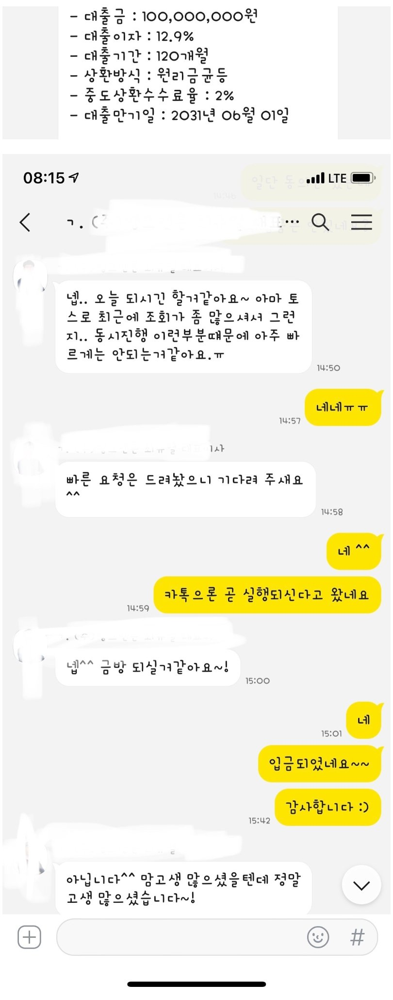

[직장인대출] 대출 승인 후기
-재직형태: 직장인
-재직기간:3년
-사대보험 가입유무: 유
-소득: 연 6800만원
-신용등급: 5등급
-채무내역: 없음
-필요서류: 등본, 건강보험 득실확인서, 건강보험 납부 확인서 ( 공인인증서로 자동 납부)
*후기*
최규열 대표이사님이 작년부터 열심히 알아봐주셨고,
강화되는 규제땜에 고민하다가
결국 대출 승인 한도 넉넉하게 받았습니다.
기대출도 연봉대비 많고 리볼빙 카드값도 너무 걱정이었어요ㅠ
요즘에 워낙 어플도 많고 대출 비교 사이트가 많은데,
잘 정리해 주시고 여러곳 비교 해주셔서
저한테 딱맞는 한도도 높고 상환개월수도 넉넉해서
월부담금이 적은 적절한 대출 받았습니다.
한도 넉넉히 승인되어
마음이 너무 편하네요! 걱정되시는 분들 꼭 상담 받아보시길 바랍니다!
